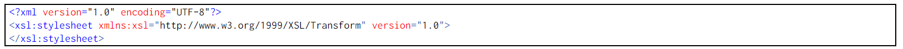
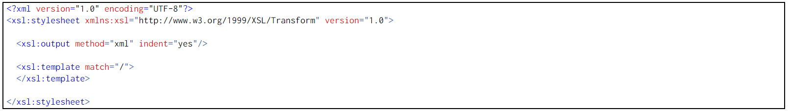

XSLT o Transformaciones XSL es un estándar de la organización W3C que presenta una forma de transformar documentos XML en otros e incluso a formatos que no son XML. Las hojas de estilo XSLT - aunque el término de hojas de estilo no se aplica sobre la función directa del XSLT - realizan la transformación del documento utilizando una o varias reglas de plantilla. Estas reglas de plantilla unidas al documento fuente a transformar alimentan un procesador de XSLT, el que realiza las transformaciones deseadas poniendo el resultado en un archivo de salida, o, como en el caso de una página web, las hace directamente en un dispositivo de presentación tal como el monitor del usuario. Actualmente, XSLT es muy usado en la edición web, generando páginas HTML o XHTML. La unión de XML y XSLT permite separar contenido y presentación, aumentando así la productividad.
XSLT se utiliza para obtener a partir de un documento XML otros documentos (XML o no). A un documento XML se le pueden aplicar distintas hojas de estilo XSLT para obtener distintos resultados y una misma hoja de estilo XSLT se puede aplicar a distintos documentos XML.
Una hoja de estilo XSLT es un documento XML que contiene al menos las etiquetas siguientes:
Dentro de la instrucción >xsl:stylesheet> se pueden encontrar los llamados elementos de alto nivel y las plantillas, como en el ejemplo siguiente:
